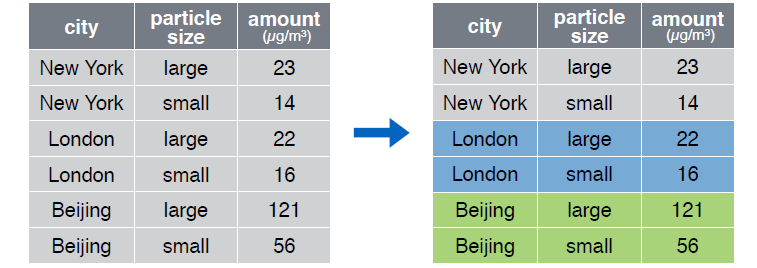
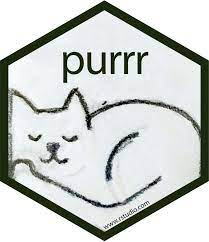
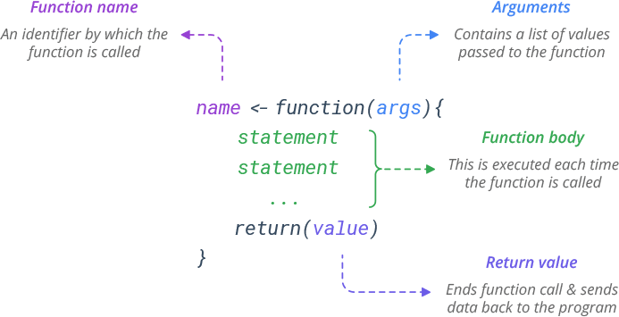
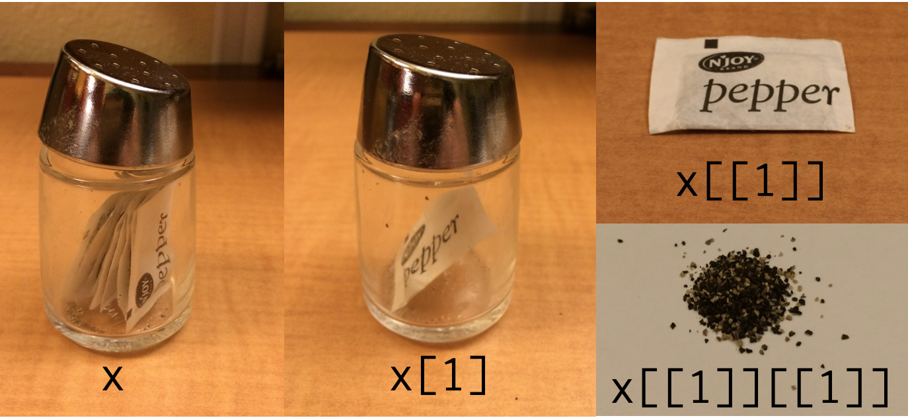
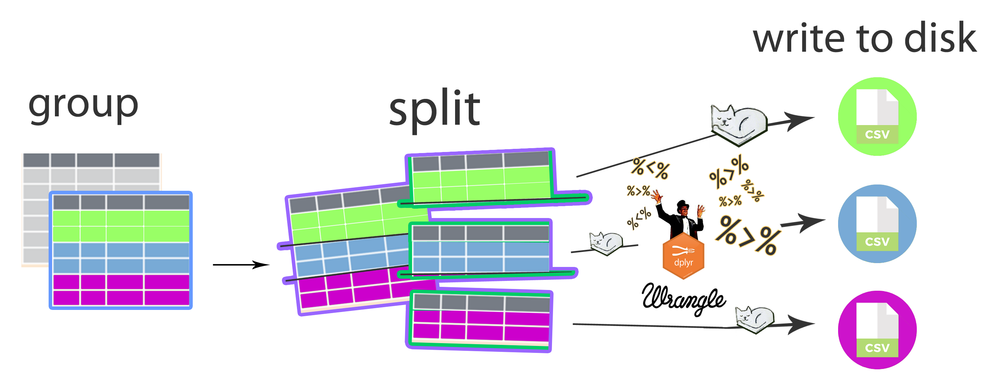
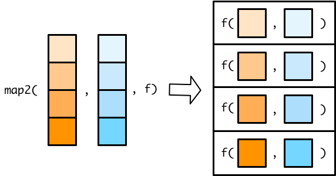
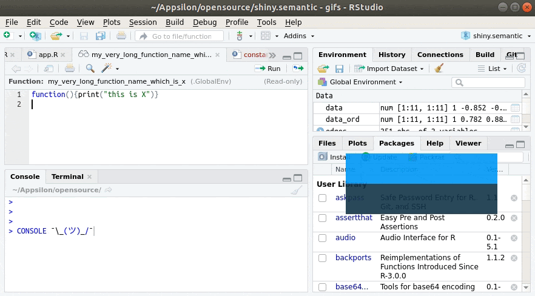

Lo que nadie nos enseñó sobre R
Temas de este bloque:
- Entornos de trabajo y configuración
- Iteración y vectorización para evitar repetición
- Trabajando con listas
- Atajos y herramientas para mayor eficiencia
- Novedades
Personalizando el entorno de trabajo
Personalización
Colores para el IDE - 🔗 rsthemes *fairyfloss
Positron: Marketplace + Preferences: Color Theme
Nadie nos va a tomar en serio en la cafetería si no programamos con un fondo oscuro
-Jared Lander
📼 R: Then and now
Fuentes y texto - 🔗 Nerd Fonts
Disposición de los paneles
Personalización
Positron
- Mercado OpenVSX (íconos, temas, asistentes, etc.)
- Disposición de elementos flexible
- Fuentes (Font Changer)
- Positron: sidebar position, arrastar paneles
Iteración
Aplicando una función varias veces
Copiar/pegar código para editarlo en análisis repetitivos agrega pasos innecesarios, quita tiempo, y aumenta el riesgo de introducir errores
Nick Holt (2017)
Function Iterations in R
Ejercicio - futbol
El archivo tabla_futbol.csv contiene la clasificación en la tabla global de la FIFA de los primeros 20 países de 1994 a 2022 y sus respectivas federaciones.
¿De qué confederación fue el equipo 20 cada año?
ej. para 1994 Zambia fue #20 y su confederación es “CAF”
Copiando, pegando, y editando
Siguiendo así seguramente introducimos algún error poco evidente y difícil de detectar
Datos agrupados
La mayoría de nuestras tareas se pueden desarrollar siguiendo el paradigma “dividir - aplicar - combinar” ( “split-apply-combine”):
- dividir los datos en grupos
- aplicar alguna función a cada grupo
- combinar los resultados
Data Carpentry (2018)
Aggregating and analyzing data with dplyr
Hadley Wickham (2011)
The split-apply-combine strategy for data analysis
dplyr::group_by()
- Define grupos según una o más variables
- Estratifica un data frame
- equivalente a
aggregate()y al argumento ‘by =’ dedata.table

Manipulación de datos en R con dplyr - Rubén Sánchez
Trabajando con datos agrupados
Con la versión agrupada de nuestra tabla, las funciones de dplyr trabajan sobre cada grupo por separado y después se combinan los resultados.
RStudio (2021)
Data transformation with dplyr cheatsheet
Opciones para datos agrupados
- resumir valores (media, mediana, etc. por grupo)
- extraer las primeras o últimas n filas por grupo
- identificar valores máximos o mínimos
- eliminar filas repetidas
- contar observaciones, etc.
Datos: áreas protegidas de Colombia
Datos sintéticos de parques nacionales naturales (PNN), su región natural y conteos de especies
| parque | region | departamento | extension_km2 | aves | anfibios |
|---|---|---|---|---|---|
| Tayrona | Caribe | Magdalena | 150 | 396 | 56 |
| S.N. Santa Marta | Caribe | Magdalena | 3830 | 628 | 60 |
| Macuira | Caribe | La Guajira | 250 | 140 | 10 |
| Chingaza | Andina | Cundinamarca | 766 | 397 | 40 |
| Los Nevados | Andina | Caldas | 583 | 220 | 26 |
| Sumapaz | Andina | Cundinamarca | 1540 | 279 | 30 |
| Utría | Pacífica | Chocó | 543 | 380 | 96 |
| Gorgona | Pacífica | Cauca | 616 | 155 | 17 |
| Amacayacu | Amazonía | Amazonas | 2935 | 468 | 143 |
| Chiribiquete | Amazonía | Caquetá | 42794 | 300 | 57 |
| El Tuparro | Orinoquía | Vichada | 5480 | 320 | 70 |
| La Macarena | Orinoquía | Meta | 6300 | 430 | 48 |
areas_protegidas <- tibble::tribble(
~parque, ~region, ~departamento, ~extension_km2, ~aves, ~anfibios,
"Tayrona", "Caribe", "Magdalena", 150, 396, 56,
"S.N. Santa Marta", "Caribe","Magdalena", 3830, 628, 60,
"Macuira", "Caribe", "La Guajira", 250, 140, 10,
"Chingaza", "Andina", "Cundinamarca", 766, 397, 40,
"Los Nevados", "Andina", "Caldas", 583, 220, 26,
"Sumapaz", "Andina", "Cundinamarca", 1540, 279, 30,
"Utría", "Pacífica", "Chocó", 543, 380, 96,
"Gorgona", "Pacífica", "Cauca", 616, 155, 17,
"Amacayacu", "Amazonía", "Amazonas", 2935, 468, 143,
"Chiribiquete", "Amazonía", "Caquetá", 42794, 300, 57,
"El Tuparro", "Orinoquía", "Vichada", 5480, 320, 70,
"La Macarena", "Orinoquía", "Meta", 6300, 430, 48
)El parque más extenso de cada región
# A tibble: 5 × 6
# Groups: region [5]
parque region departamento extension_km2 aves anfibios
<chr> <chr> <chr> <dbl> <dbl> <dbl>
1 Chiribiquete Amazonía Caquetá 42794 300 57
2 Sumapaz Andina Cundinamarca 1540 279 30
3 S.N. Santa Marta Caribe Magdalena 3830 628 60
4 La Macarena Orinoquía Meta 6300 430 48
5 Gorgona Pacífica Cauca 616 155 17Muestrar una fila al azar de cada grupo
# A tibble: 5 × 6
# Groups: region [5]
parque region departamento extension_km2 aves anfibios
<chr> <chr> <chr> <dbl> <dbl> <dbl>
1 Amacayacu Amazonía Amazonas 2935 468 143
2 Los Nevados Andina Caldas 583 220 26
3 S.N. Santa Marta Caribe Magdalena 3830 628 60
4 La Macarena Orinoquía Meta 6300 430 48
5 Gorgona Pacífica Cauca 616 155 17“Desagrupar”
Las tablas agrupadas por group_by retienen el agrupamiento, y para descartarlo usamos ungroup()
# A tibble: 5 × 6
parque region departamento extension_km2 aves anfibios
<chr> <chr> <chr> <dbl> <dbl> <dbl>
1 Chiribiquete Amazonía Caquetá 42794 300 57
2 Los Nevados Andina Caldas 583 220 26
3 Macuira Caribe La Guajira 250 140 10
4 La Macarena Orinoquía Meta 6300 430 48
5 Gorgona Pacífica Cauca 616 155 17Agrupamiento rápido
En versiones recientes de dplyr:
- Agrupar con
.byoby
# A tibble: 10 × 6
parque region departamento extension_km2 aves anfibios
<chr> <chr> <chr> <dbl> <dbl> <dbl>
1 Tayrona Caribe Magdalena 150 396 56
2 Macuira Caribe La Guajira 250 140 10
3 Los Nevados Andina Caldas 583 220 26
4 Chingaza Andina Cundinamarca 766 397 40
5 Utría Pacífica Chocó 543 380 96
6 Gorgona Pacífica Cauca 616 155 17
7 Chiribiquete Amazonía Caquetá 42794 300 57
8 Amacayacu Amazonía Amazonas 2935 468 143
9 La Macarena Orinoquía Meta 6300 430 48
10 El Tuparro Orinoquía Vichada 5480 320 70Usando el argumento
byya no se quedan ‘pegados’ los grupos (agrupamiento persistente vs. agrupamiento por operación)
A veces usamos
.byy a vecesby
Resumiendo valores
Resumiendo valores
Ejercicio - futbol
Ahora sí, a responder:
- ¿De qué confederación fue el equipo 20 cada año?
- Puntos totales por año para todos los equipos
Bucles (for loops)
- De gran utilidad
- No siempre es necesario escribirlos de 0
- Llevan >20 años corriendo rápido
Jenny Bryan
purrr tutorial
Data Rectangling
purrr workshop
Bucles
Ejercicio - loops
Escribir un bucle para imprimir en la consola cada letra del alfabeto, en minúscula y en orden descendiente (z,y,x,w…)
Note
hay constantes pre-instaladas en R que les pueden servir
Bucles y grupos
Todo se queda dentro del data frame
Vectorización
Operaciones que ocurren en paralelo en todos los elementos (de un vector, lista, etc.) y no uno por uno en cada elemento
¿Aquí qué pasa?
Los operadores lógicos (entre muchos otros) son vectorizados
No hace falta teclear todo ésto o escribir un bucle
American Greetings
Cuando sí necesitemos iterar:

📦 purrr - Herramientas para programación funcional
funciones
mapque aplican una función a cada elemento de una lista o vector y devuelve un resultado de la misma longitud que la entradatrabaja bien con listas
código legible y conciso
Thomas Mock (2018)
Functional Programming in R with purrr
map(.x, .f, …)
para cada elemento de .x
aplica .f
... argumentos para .f
“Mapeando” funciones a datos
map(.x,.f)
.f se puede especificar como:
una función existente
una función anónima definida sobre la marcha
una fórmula: notación abreviada para funciones
una función anónima abreviada (shorthand) en versiones recientes de R
Funciones

Definiendo funciones
usamos la función ‘function()’
function( arglist ) expr
argumentos (arglist): valores para la función
expresión (expr): un objeto que representa una acción que R puede hacer
Note
Las expresiones pueden tener una o más declaraciones
Definiendo funciones
El cuerpo de la función (las declaraciones que se ejecutan al correr la función) se agrupa con llaves ({})
Al ejecutar funciones es opcional especificar los nombres de los argumentos, pero en funciones con >1 argumentos, el orden importa
Las llaves rodean el cuerpo en funciones con dos o más declaraciones. Las declaraciones (statements) están en líneas separadas
Funciones anónimas
Funciones para llevar (se crean y se ejecutan pero nunca se asignan a un objeto con nombre)
Sintaxis
La definición va entre paréntesis para separar la función de sus argumentos
Funciones anónimas
Útiles para aplicar una función personalizada a varios elementos a la vez
También conocidas como expresiones lambda
Autocontenidas
Comparables con métodos parecidos en Python
Por qué escribir nuestras propias funciones
Menos repetición
Mayor brevedad
Menor posibilidad de errores
Aprovechar las herramientas que nos dejan aplicar funciones a muchos elementos a la vez
Jenny Bryan - Stat545
Write your own R functions
Listas
Listas
Objetos que pueden contener elementos de diferentes tipos como números, cadenas de texto, vectores, tablas, o incluso más listas
Rebecca Barter (2019)
Learn to purrr
Podemos creas listas partiendo otros objetos
Separando una data frame agrupada en una lista de data frames, una para cada grupo.
<list_of<
tbl_df<
parque : character
region : character
departamento : character
extension_km2: double
aves : double
anfibios : double
>
>[5]>
[[1]]
# A tibble: 2 × 6
parque region departamento extension_km2 aves anfibios
<chr> <chr> <chr> <dbl> <dbl> <dbl>
1 Amacayacu Amazonía Amazonas 2935 468 143
2 Chiribiquete Amazonía Caquetá 42794 300 57
[[2]]
# A tibble: 3 × 6
parque region departamento extension_km2 aves anfibios
<chr> <chr> <chr> <dbl> <dbl> <dbl>
1 Chingaza Andina Cundinamarca 766 397 40
2 Los Nevados Andina Caldas 583 220 26
3 Sumapaz Andina Cundinamarca 1540 279 30
[[3]]
# A tibble: 3 × 6
parque region departamento extension_km2 aves anfibios
<chr> <chr> <chr> <dbl> <dbl> <dbl>
1 Tayrona Caribe Magdalena 150 396 56
2 S.N. Santa Marta Caribe Magdalena 3830 628 60
3 Macuira Caribe La Guajira 250 140 10
[[4]]
# A tibble: 2 × 6
parque region departamento extension_km2 aves anfibios
<chr> <chr> <chr> <dbl> <dbl> <dbl>
1 El Tuparro Orinoquía Vichada 5480 320 70
2 La Macarena Orinoquía Meta 6300 430 48
[[5]]
# A tibble: 2 × 6
parque region departamento extension_km2 aves anfibios
<chr> <chr> <chr> <dbl> <dbl> <dbl>
1 Utría Pacífica Chocó 543 380 96
2 Gorgona Pacífica Cauca 616 155 17group_keys() muestra los grupos
‘Indexando’ listas

Hadley Wickam (2015) en Twitter
Accediendo a elementos de listas
Primer elemento ([[1]])
Segundo elemento

Luis (2017)
Export Iteratively
¿Para qué usar listas?
Clase versátil para almacenar varios tipos de objetos
Fáciles de crear partiendo otros objetos
Cada elemento puede tener nombre
‘Mapeo’ de funciones a datos
Aplicar funciones iterativamente
Importar varios archivos en un solo comando
Modificar y/o exportar múltiples objetos
Aplicar funciones iterativamente
[[1]]
[1] NA
[[2]]
[1] NA
[[3]]
[1] NAcon argumentos adicionales
Aplicar funciones personalizadas iterativamente
Probar con vectores
map() para aplicar nuestra función a la lista
Note
Solo usamos el nombre de la función
map() con funciones anónimas
Funciones que podemos escribir dentro de map() sin definir
Mike Cheng (2019)
Anonymous Functions in R - Part 1
Mismo comportamiento
Importando o escribiendo muchos archivos
map(.x,.f)
.x puede ser una lista o vector de rutas de archivo
.f puede ser una función que lee o escribe archivos
📄📄📄📄📄📄📄📄📄
Ejercicio
Crear una carpeta llena de archivos de texto
cargar el archivo
resultados_21k.csvagrupar los datos por localidad y crear una lista de data frames con una para cada localidad
crear un vector con los nombres de las localidades
Note
😲 es posible iterar con dos inputs en paralelo
map() con dos inputs
map2(.x, .y, .f)
Ambas listas de vectores de entrada se le pasan como argumentos a la función .f

Altman et al. (2021)
Map with multiple inputs
Ejercicio - Carpeta con archivos
crear una carpeta “resultados21k”
usar
here()para crear rutas estables y portátiles para cada localidad, por ejemplo:here("datos","resultados21k","Usaquen"), teniendo en cuenta quehere()es una función vectorizadapasar la lista de data frames y el vector de rutas a
write_csvdereadrowrite.csvde R base
🔥🏃🔥
Ejercicio - Importando varios archivos a la vez
usar
dir_ls()para crear un vector con las rutas de los archivos creados en el paso anteriorimportar cada elemento de este vector con
map()yread_csv()dereadrusar funciones con regresos específicos para terminar con la tabla inicial
map de alto rendimiento

📦 mirai - Minimalist Async Evaluation Framework for R
- Se encarga de todo para paralelizar funciones
map - De los núcleos de nuestra PC hasta SSH, Slurm, Torque, LSF
Con R base
R base tiene herramientas para iterar desde sus inicios: la familia apply
purrr |
R Base |
|---|---|
map() |
lapply() |
map2(), pmap() |
mapply() |
Familia apply
lapply(): (List apply) Aplica una función a cada elemento de una lista o vector y siempre devuelve una lista.sapply(): (Simplified apply) Intenta simplificar el resultado delapply(). Si puede, devuelve un vector o matriz; si no, una lista.tapply(): (Table apply) Aplica una función a subconjuntos de un vector definidos por uno o más factores (agrupamientos).
¿Por qué purrr?
- Consistencia en argumentos: En
purrr, el objeto a iterar (.x) siempre es el primer argumento. En R base varía. - Type-safety:
sapply()puede devolver una lista, un vector o una matriz según el resultado. - Sintaxis: Soporte para funciones anónimas
- Integración: Funciona con el pipe (
|>) y otras herramientas deltidyverse.
Ejemplo: map() vs lapply()
Atajos y herramientas para mayor eficiencia
Programando eficientemente
En Positron: habilitar atajos RStudio (settings -> Workbench -> RStudio Keybindings)
Ctrl == ⌘ Command && Alt == ⌥ Option
- cursor multilinea (
ctrl+alt+arriba) o (ctrl+alt+abajo) - quitar con
esc
Atajos de teclado
- panel de atajos (
alt+shift+k) - insertar ‘pipe’ (
ctrl+shift+m) - operador de asignación (
alt+-) - arrastrar línea (
alt+up) o (alt+down)
- ejecutar línea (
ctrl+enter) - indentar o ‘desindentar’ selección (
tabyshift+tab) - convertir selección a comentario (
ctrl+shift+c)
Atajos útiles
- Cambiar enfoque entre paneles
- (
ctrl+1hasta8) - Maximizar paneles con (
ctrl+shift+1hasta8)
- (

Más atajos
Modificar selección ctrl+alt+shift+m
Para acceder a la documentación ? o F1
Abriendo objetos en el visualizador
ctrl + click
Ejecutar de nuevo la última línea
ctrl + Alt + P
Abrir el directorio de trabajo
shell.exec(getwd()) en Windows y en Linux browseURL(getwd())
Atajo de Open Containing Folder en Positron
En Positron
- Click derecho en archivos o pestañas para copiar rutas absolutas y relativas
- Paleta de comandos Ctrl + Shift + P
- Botón Split Editor
Secciones de código y el esquema de documento
Dividir un script en segmentos discretos
Las secciones se pueden colapsar y funcionan con el panel de navegación del editor de fuente.
- Crear con cuatro guiones después de un comentario
- Insertar con
ctrl+shift+R